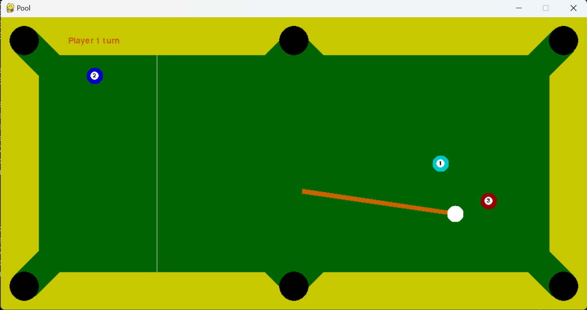
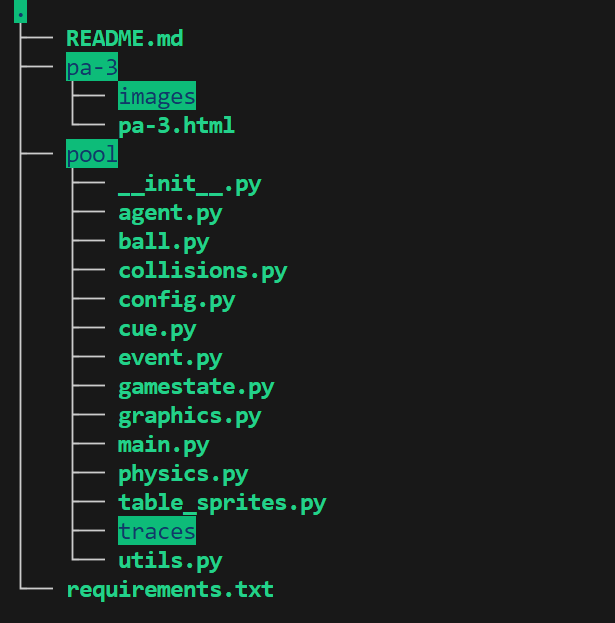
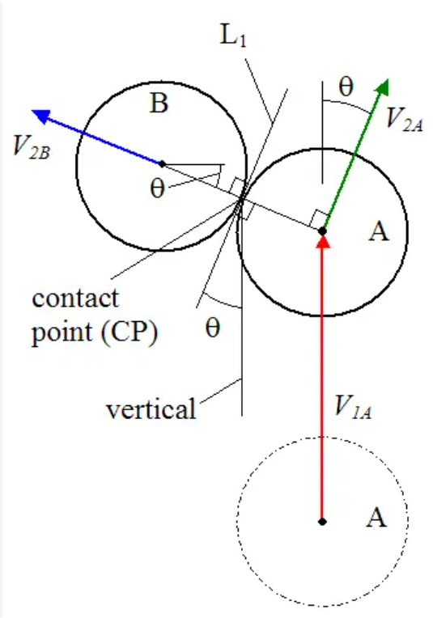

In this assignment you will be doing...blah...blah...blah. Are you tired of this opening of assignments? Let's try with a different one.
Are YOU tired of missing shots while playing billiards? Do YOU want to beat Ronnie O' Sullivan in billiards? Then this assignment is an opportunity in disguise, wherein you get to make your own agent that is able to perform optimally in the game of billiards!
10k feet view : You are given a simulator that simulates billiards for you (thanks to max-kov) and you need to code an agent that decides an optimal action given the current state of the pool table (ball positions and hole positions).

Look up, "Running the Code" section to get the simulator running. You only have to modify and submit agent.py file for this assignment. The directorytraces will consist of trace files of your actions, if you wish to store (more details in "Command-line arguments").
config.py file has the data regarding the configuration of table and the simulator. You might need table_margin, ball_radius, hole_radius, etc. Do NOT modify any files other than agent.py.
Direct 0 marks if you change any variables (even dynamically) in config.py through agent.py.
config.py. The radius of balls is also stored in self.ball_radius of class Agent.

The configuration of the table can be found inconfig.py file of the given directory. You are allowed to access any
variables of config.py but not modify them (0 marks if we find any such case). pygame is used for the simulation
the game. Some details regarding how the simulation works:
action() function of your agent is called in this function to fetch the (angle, force) pair.You need to code your agent in the file agent.py. The agent class has the following functions already defined -
set_holes(), action(). You would only need to change action() which has only a single
argument ball_pos containing the state of the game, represented by positions of balls on the table.
Below is the default random agent given to you (in agent.py) :
class Agent:
def __init__(self, table_config) -> None:
self.table_config = table_config
self.prev_action = None
self.curr_iter = 0
self.state_dict = {}
self.holes =[]
self.ns = utils.NextState()
def set_holes(self, holes_x, holes_y, radius):
for x in holes_x:
for y in holes_y:
self.holes.append((x[0], y[0]))
self.radius = radius
def action(self, ball_pos=None):
return (2*random.random() - 1, random.random())
What are states? ball_pos (which is the state provided to agent) is a dictionary of the following form:-
{
"0": [
148.13247611407394,
133.29004019051328
],
"1": [
920.0,
80.0
],
"2": [
920.0,
420.0
],
"white": [
148.13247611407394,
133.29004019051328
]
}
State description : Here, value of the key "white" is the coordinates of the cue ball and similarly the values of keys ranging from 0 to 2 are the coordinates of all the balls (including cue ball, denoted by index 0) present on the table. Note that cue ball is represented both as key "white" and key "0". The state given to the agent is when all the balls are stationary. Although the simulation goes through intermediate states, since the agent cannot do anything before the balls are stationary, these are not given to the agent.
Cartesian plane : Coordinates of the balls (as well any other objects, like holes) are in the cartesian plane with the origin lying at the top left of the table. The positive X-Axis is horizontally rightwards, while the positive Y-Axis is vertically downwards.
Hole positions : You are also given the position of the holes and radius of balls via set_holes() which is called by the simulator before the call to action(). Don't change set_holes() if you plan on completing the assignment. Hence, you have access to self.holes in action() function, which is essentially a list of hole coordinates.
Output of the agent (important, pay attention) : Theaction()function has to return a tuple of normalized angle and force (angle in range [-1,1], force in range [0, 1]). Angle is measured from negative Y-Axis with clockwise being positive angle (yes...we wanted to make your lives harder). The angle is linearly normalized to [-1,1], eg, pi/2 -> 0.5; -0.75pi-> -0.75, etc.
Force is a direct indicative of the initial speed of the cue ball, with 1 representing the maximum force and 0 being the minimum. You would not want to give an unnecesarily high force due to an increased random error term in the angle, resulting from a high force.
Error in angle : In order to mimic real scenarios where high force to cue ball cultivates to less control, we add noise to the angle provided by the agent. Hence, final_angle = angle_provided + error
Here, error ~ N(mean = 0; var = increasingfunc(F)), where F is the force provided by the agent. (can look into update_cue() in cue.py)
config.py, which are public levels. While evaluation, we will add another 10 levels (private levels), which will have configurations similar to the public levels with minor differences in ball positions.
The goal is to pot all the balls within a given max_tries, specific to the level. As the level progresses the max tries is decreased by 2, starting from 30 for level 0. An example output is of the form:
Running the agent on 1 runs
MAX_TRIES : 22
Level 4 passed
Tries : 14
#### Levels passed : 1 out of 1 ####
| Level Number | Number of Balls | Marks | Max Tries |
|---|---|---|---|
| 0 | 4 | 0.4 | 30 |
| 1 | 4 | 0.4 | 28 |
| 2 | 4 | 0.4 | 26 |
| 3 | 5 | 0.6 | 24 |
| 4 | 4 | 0.6 | 22 |
| 5 | 5 | 0.6 | 20 |
| 6 | 4 | 0.6 | 18 |
| 7 | 5 | 0.8 | 16 |
| 8 | 5 | 0.8 | 14 |
| 9 | 6 | 0.8 | 12 |
Next state : We have provided a get_next_state() function in utils.py which can be used by by callin self.ns.get_next_state(). The function takes three arguments - state, action and a random seed (for deterministic error).
The function returns the next state based on the action and the current state provided, without running on the actual simulation.
Hence, the agent can try any arbitrary action on any arbitrary state to fetch the next state and then decide which action to choose and return.
The number of calls you can make to this function in one second depends heavily on your computer systems, but it is approximately 4-5 calls per second.
Given the total simulation time limit as 1000 seconds (also explained later in "Evaluation" section) you can approximately make 15-20 calls to self.ns.get_next_state() in your agent
before deciding your action. The numbers are only tentative and not strict
Traces : Using the --generate-traces command line argument, your actions and corresponding next state is recorded and saved in the traces directory as a JSON. This can be used for generating the dataset for training your agent from the trace files. Eg of a trace file:
{
"1": {
"action": [
-0.07807628366854513,
0.5867365604164771
],
"state": {
"0": [
449.6884066084521,
268.87292264519124
],
"3": [
750.0,
420.0
],
"1": [
750.0,
250.0
],
"2": [
250.0,
80.0
],
"white": [
449.6884066084521,
268.87292264519124
]
}
},
"2": {
"action": [
-0.2491698187632554,
0.2605640895047009
],
"state": {
"0": [
681.9780964821935,
121.37648736770723
......................
Here, for each try (the keys of parent dictionary), the action and the produced next state is stored.
--level-x n : will run particular level n.
--level-all : will run all levels in a sequential manner
--generate-traces : will save a trace file of each action taken and the correspondding next state
--no-render : will not display the graphics of the simulation (can make simulation faster by 50-60 secs)
--generate-stats: to print stats related to the simulation, like mean tries, total time, etc.
--debug : the simulator will not add noise to the angle provided by agent. Only for the purpose of debugging
In order to run the code, follow the below steps,
pip install -r requirements.txt
pool
python main.py --level-all (look for command-line arguments for other options)
By default the agent.py script has a random agent. You need to modify the agent.
6 marks have been reserved for the public testcases (levels). 6 more marks have been reserved for the hidden testcases which will be similar to the public ones. The final 3 marks have been reserved for your report. (6+6+3=15)
Both the public and private test cases have 10 levels. Marks of each level is described in the marking scheme.
We will be running your code with the command : python main.py --level-all --no-render --seed [hidden]
(Important) Please make sure your simulation runnning time for all the 10 public levels do not exceed 1000 secs. Check the total simulation time by --generate-stats command line argument
Unlike the previous assignments, you have been given a free hand to come up with your agent. Hence, we would like to see a clear presentation of your approach.
For unique and successful approaches, we don't mind requesting the professor for bonus marks ;).
Include a file named report.pdf that spells out the ingredients of your solution, any intermediate experiments that may have guided your decisions,
learning curves if you did use some form of learning/parameter tuning, and so on. If your report is not sufficiently clear and informative, you will stand to lose marks.
The TAs and instructor may look at your source code and notes to corroborate the results obtained by your program, and may also call you to a face-to-face session to explain your code.
You have to submit one tar.gz file with the name (roll_number).tar.gz. Upon extracting, it must produce a folder with your roll number as its name. It must contain a report.pdf - the report as explained above, and one code file: agent.py. You must also include a references.txt file if you have referred to any resources while working on this assignment (see the section on Academic Honesty on the course web page).